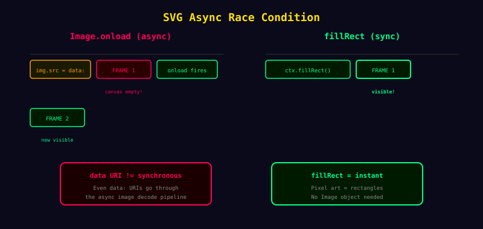

Bug 3
버그 사례 3: 첫 프레임에서 과일이 안 보이는 비동기 레이스 컨디션
data URI 기반 이미지도 결국 비동기라는 사실이 첫 프레임 공백을 만들었습니다.
40

무엇을 배웠나
문제는 종종 “렌더링”이 아니라 “타이밍”에 있다.
비동기 자체를 없애는 쪽이 더 좋은 해결일 수 있다.
작은
<rect>
기반 픽셀 아트는 오히려 동기 렌더링으로 전환할 수 있었다.